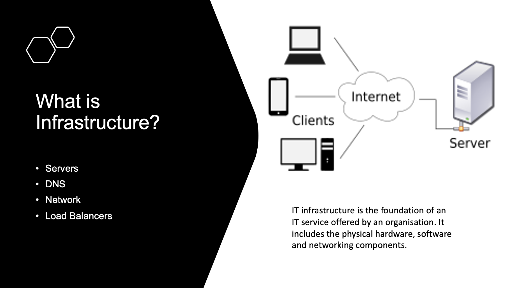

Introduction
Date: 27 Jul 22
We were tasked with presenting the work of the Hack team as well as an introduction to DevOps practices and technologies more generally to a non-technical audience.
The Audience was a portfolio team whose interests included our work but who didn’t necessarily have any technical background.
How did we get the ticket?
The portfolio team had been conducting a series of meetings where a representative from another team and explained in layman’s terms how they worked and what it was that they were concerned with. For example, the week before our presentation, a member of the developer team demonstrated Jenkins pipelines and explained how they worked with them. When our team was approached, it was decided by the lead that this would be an ideal opportunity for me and a fellow apprentice to demonstrate what we had learnt as well as consolidating our knowledge of the team and how it fit into the organisation.
What was the situation?
It was deemed that the portfolio team’s knowledge of modern DevOps practices and philosophy, as well as common technologies and their uses was very lacking. It was impressed upon us that not only should we highlight our day-to-day work but also give some insight into the motivations behind the development of the DevOps philosophy and further relevant context.
The team
The work was divided between me and another apprentice and we consulted other team members for guidance. B1

It was decided that a PowerPoint presentation would be the most effective method to get our point across. I suggested at the beginning of the planning session that rather than giving distracting secondary information, it would be best if the PowerPoint provided a skeleton for what we were saying. That way, the audience would be able follow the structure of our talk and anticipate what they were about to hear and infer the correct context.
The structure of the presentation
I also suggested that it might be useful to divide our presentation into two parts. As DevOps practices are largely the result of and reaction to prior working practices in manging IT infrastructure and Ops, I reasoned that our introduction to these practices would not make sense without the added context of what they were replacing. This would be the first part.
Once we had introduced some context I felt that the second half should speak about what DevOps included based on advice from my line manager. We didn’t want to just read a list of technologies and end it there, so I suggested we use mock user stories such as the one below.
________________
STAKEHOLDER | As a Developer |
¯¯¯¯¯¯¯¯¯¯¯¯¯¯¯¯
_________________________________________
TASK | I want an isolated environment that has |
| everything I need for my program to run |
¯¯¯¯¯¯¯¯¯¯¯¯¯¯¯¯¯¯¯¯¯¯¯¯¯¯¯¯¯¯¯¯¯¯¯¯¯¯¯¯¯
____________________________________________
RESULT | So, the apps I develop work in exactly the |
| same way on any machine |
¯¯¯¯¯¯¯¯¯¯¯¯¯¯¯¯¯¯¯¯¯¯¯¯¯¯¯¯¯¯¯¯¯¯¯¯¯¯¯¯¯¯¯¯
After the basic structure we decided to divide the work in two. The other apprentice would handle the user stories and I would write the first half explaining the necessary context. On my part, this required a small amount of research into the history of DevOps and its original motivations so I could draw parallels between how a team like ours would have functioned 20 years ago vs now. It was paramount to be very clear on this last point, as I believed that describing computers and physical network infrastructure was easier to imagine for layman than the more “abstract” work undertaken by DevOps engineers today. After the presentation, this approach was particularly lauded as it managed to put our work in a context. People said they could see the problems inherent in the previous ways of managing IT infrastructure and see how DevOps solved these problems
Feedback
After we had a rough idea of the layout of the presentation, we approached several other staff members within and without the team to get feedback from a range of perspectives. There are several appropriate ways of communicating when trying to get input from people and they have different advantages. We chiefly used two different methods, meeting in person (with a smart screen) and meeting on Microsoft teams. This was most appropriate for our needs because our presentation relied on a visual aide so we could discuss how the information related to what was on screen. The visual aide we decided was necesary because since our audience was non technical it might help to have some of the names of the concepts that we were using on screen so they could take notes. K19
Before we had any concrete ideas about the presentation we met with one of the members of our own team to discuss what should be included. He went through his ideas of DevOps and how that tied in reality to what our team did. This was useful for seeing the wider picture that we were to later have to describe to an outside team.
Secondly, we delivered the presentation to a non-technical delivery manager on our team through video call. She advised us to minimise the technical jargon and explain the terms explicitly. She explained that analogies might be helpful as well.
A week later, after making some adjustments, we delivered our presentation in-person to the technical architect that oversees our team. As a person acting in a technical role, he would be able to check our presentation for correctness as well as give further advice about technical presentations. His advice was to streamline the technical details even more as well as to possibly make some links to the previous weeks talk. After this meeting, I really stripped back my exposition of DevOps history and really focussed on making it into a story that could be easily understood upon hearing. This not only communicated the content better but also made the presentation easier to deliver.
So, in the presentation, I suggested where we have one slide where I roughly explain the meaning of certain terms using one or two sentences to give the audience to grab onto before more in depth explanations. This was to great effect later as people remarked how easy the presentation was to follow and how it illuminated aspects of DevOps that they had never fully understood. S1
Conclusion
At the end we received good feedback on the content, narrative as well as the delivery of the presentation. The result was that the portfolio team had greater insight into the workings of Team Hack and in future will have a greater ability to see the relevance of our work and how it affects theirs.